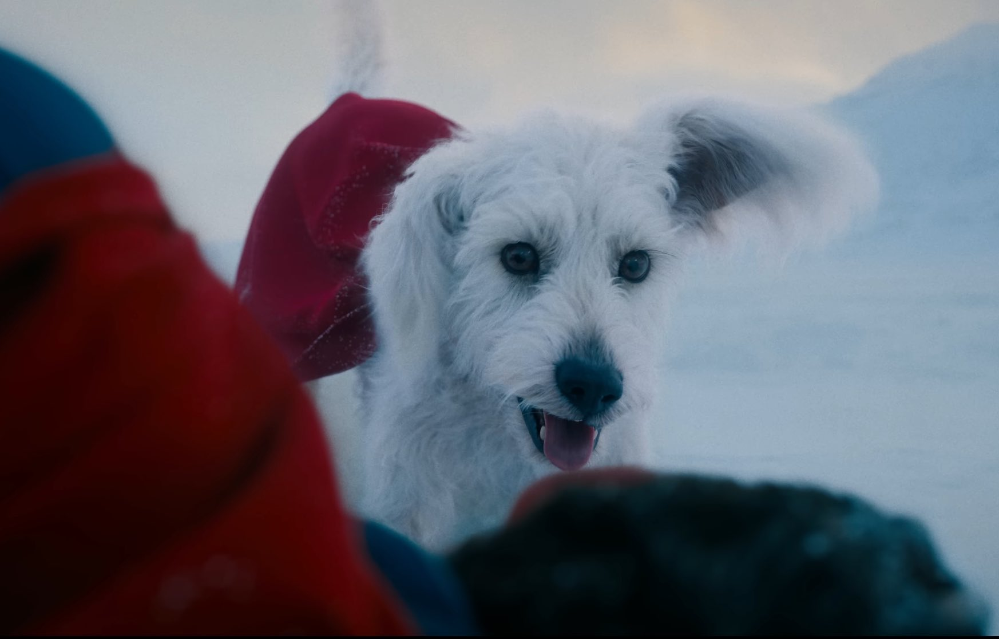

Après le reboot du DC Universe par James Gunn, c’est au tour de Superman de revenir sur grand écran. Ce projet ambitieux, qui marque un nouveau départ pour le personnage emblématique de DC, promet de redéfinir le héros sous un nouvel angle. On vous dit tout ce qu’il faut savoir sur Superman.
Superman est l’un des personnages les plus iconiques de l’univers DC. Depuis sa création, il a connu de nombreuses adaptations cinématographiques, la dernière en date étant Man of Steel (2013), réalisée par Zack Snyder. Si ce film a divisé les fans, il a aussi marqué le début du DCEU. Aujourd’hui, c’est à James Gunn, co-président des DC Studios, de réinventer l’Homme d’Acier dans un tout nouveau chapitre.
Un Superman à la croisée des chemins
Superman explorera la dualité de Clark Kent : ses origines kryptoniennes aristocratiques et son éducation terrienne empreinte de modestie et de valeurs humaines. Le film promet d’être une réflexion sur ce que signifie être un héros dans un monde complexe et en constante évolution.
James Gunn, à la fois scénariste et réalisateur du projet, a déclaré :
"C’est l’histoire d’un Superman qui tente de concilier son héritage extraterrestre avec son humanité. Il est à la fois un symbole d’espoir et un homme ordinaire." - James Gunn
Krypto, le chien de Superman : une relation complexe et unique selon James Gunn
Dans le film Superman de James Gunn, Krypto, le chien de Superman, occupe une place significative.
James Gunn a révélé que Krypto a été inspiré par son propre chien, Ozu, adopté peu après qu'il ait commencé à écrire le scénario. Ozu, issu d'une situation difficile avec une soixantaine d'autres chiens, a présenté des comportements problématiques, détruisant des objets dans la maison et mettant du temps à s'adapter à sa nouvelle vie. Cette expérience a amené Gunn à réfléchir : "Je me suis dit : 'Mon Dieu, à quel point la vie serait difficile si Ozu avait des super-pouvoirs ?' – et ainsi, Krypto est entré dans le script et a changé la forme de l'histoire."
Dans le film, la relation entre Superman et Krypto est décrite comme "compliquée". Gunn a mentionné que cette complexité contribue à l'intérêt du film, soulignant que Krypto n'est "pas vraiment le meilleur chien".
Le premier teaser du film montre une scène où Superman, interprété par David Corenswet, appelle à l'aide son chien Krypto après un atterrissage forcé dans une région glacée, illustrant la profondeur de leur lien.
Ainsi, Krypto ne sera pas seulement un compagnon fidèle, mais apportera également une dynamique unique à l'histoire, enrichissant la narration et offrant une nouvelle perspective sur la vie du super-héros.
Un casting prometteur
- Clark Kent / Superman : David Corenswet
- Lois Lane : Rachel Brosnahan
- Lex Luthor : Nicholas Hoult
- Jimmy Olsen : Skyler Gisondo
- Hawkgirl : Isabela Merced
- Green Lantern (Guy Gardner) : Nathan Fillion
- Mister Terrific : Edi Gathegi
- Metamorpho : Anthony Carrigan
Une date de sortie très attendue
Superman: Legacy est prévu pour une sortie en salles le 9 juillet 2025. Ce film sera l’un des premiers à poser les bases du nouveau DC Universe sous la direction artistique de James Gunn.
Une bande-annonce surprenante
Ce teaser met en lumière un Superman vulnérable, illustrant les défis auxquels il est confronté en tant qu'individu doté de pouvoirs extraordinaires. James Gunn a souligné que le film se concentrera davantage sur les luttes humaines de Superman plutôt que sur ses superpouvoirs, offrant ainsi une perspective plus intime du personnage. Vous pouvez retrouver la bande annonce en cliquant sur voir la Bande Annonce du film Superman.
Autant dire que Superman est attendu au tournant. James Gunn, connu pour son travail sur Gardiens de la Galaxie chez Marvel Studios, a promis une approche plus humaine et introspective du héros, explorant la dualité entre ses origines kryptoniennes et son éducation terrienne.
Et vous, qu’attendez-vous le plus de ce nouveau Superman ? Lex Luthor sera-t-il un méchant mémorable ? Lois Lane et Clark Kent auront-ils une relation revisitée ?